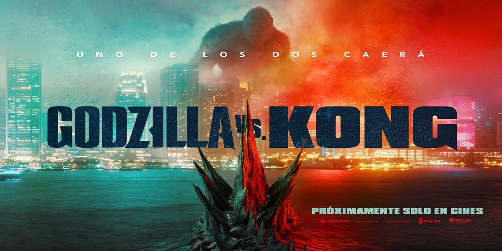

Filmes

Godzilla vs Kong
6 de maio de 2021 / 1h 54min /Ação, Aventura
Direção: Adam Wingard
Sinopse: Godzilla e King Kong se enfrentam em batalha, Enquanto uma conspiração humana busca acabar
com todas as criaturas da Terra, sejam elas ameaçadoras ou não.